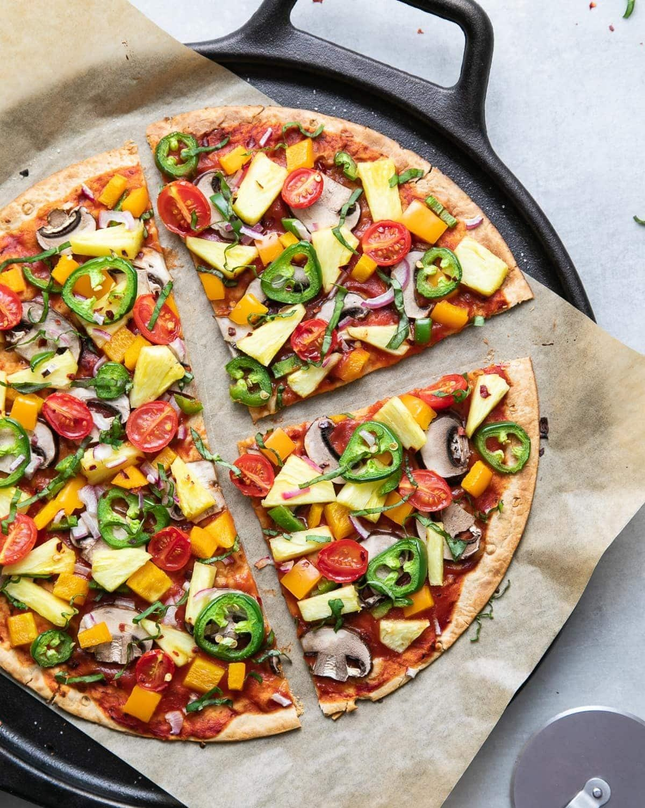

Veg Pizza
⭐⭐⭐⭐⭐ 4.9 Rating | ⏱ 45 Minutes | 🍽 4 Servings
Category
Fast Food
Difficulty
Medium
Calories
420 kcal
Cooking Style
Baked
📋 Ingredients
- 1 Pizza Base
- ½ Cup Pizza Sauce
- 1½ Cups Mozzarella Cheese
- ½ Onion (Sliced)
- ½ Capsicum (Sliced)
- ½ Tomato (Sliced)
- ¼ Cup Sweet Corn
- ¼ Cup Black Olives
- 1 tsp Oregano
- 1 tsp Chilli Flakes
- 1 tsp Olive Oil
- Salt (Optional)
🍳 Required Utensils
- Oven or OTG
- Baking Tray
- Pizza Cutter
- Knife
- Cutting Board
- Mixing Bowl
- Serving Plate
📖 Introduction
Veg Pizza is a delicious Italian-inspired dish topped with fresh vegetables, pizza sauce, and melted mozzarella cheese. It is one of the most loved fast foods across the world.
🔬 Principle
Pizza is prepared by spreading sauce over a pizza base, adding vegetables and cheese, then baking at high temperature until the cheese melts and the crust becomes crispy.
👨🍳 Procedure
- Preheat the oven to 220°C.
- Place the pizza base on a baking tray.
- Spread pizza sauce evenly.
- Add grated mozzarella cheese.
- Arrange onion, capsicum, tomato, sweet corn, and olives.
- Sprinkle oregano and chilli flakes.
- Brush the edges with olive oil.
- Bake for 12–15 minutes.
- Remove once the cheese melts and the crust turns golden.
- Allow it to cool for 2 minutes.
- Cut into slices.
- Serve hot.
⚠ Precautions
- Preheat the oven properly.
- Do not overload with toppings.
- Use fresh vegetables.
- Avoid overbaking.
- Handle the hot tray carefully.
💡 Chef Tips
- Add paneer cubes for extra protein.
- Use fresh mozzarella for better taste.
- Add mushrooms and jalapeños.
- Brush garlic butter on the crust.
- Serve immediately after baking.
🥗 Nutrition Facts
| Nutrient | Amount |
|---|---|
| Calories | 420 kcal |
| Protein | 16 g |
| Carbohydrates | 45 g |
| Fat | 18 g |
| Fiber | 5 g |
🍽 Serving Suggestions
- Serve with tomato ketchup.
- Enjoy with garlic bread.
- Pair with cold soft drinks.
- Serve with pasta.
- Garnish with fresh basil leaves.
🌿 Health Benefits
- Vegetables provide vitamins and minerals.
- Cheese supplies calcium and protein.
- Sweet corn adds dietary fiber.
- Homemade pizza contains fewer preservatives.
- Balanced meal when eaten in moderation.
✅ Result
The prepared Veg Pizza should have a crispy golden crust, melted cheese, colorful vegetables, and rich pizza flavor. It should be served hot with oregano, chilli flakes, and tomato ketchup.
🎥 Watch Recipe Video
Learn the complete recipe by watching the step-by-step video.
▶ Watch on YouTube